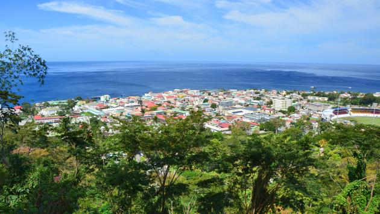
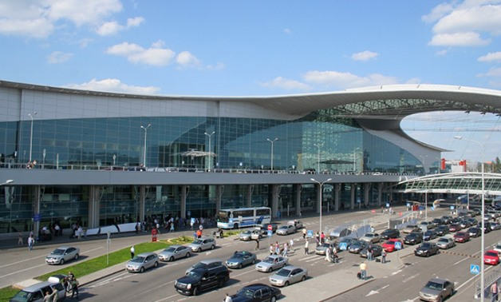
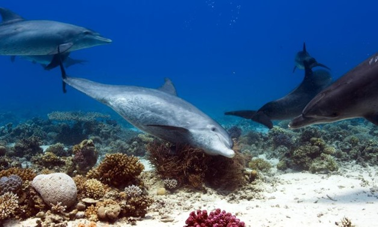

most read
- 17 Countries Opening Their Borders to Americans This Summer
- Jamaica Announces Newly Revised Measures for International Travelers
- 25 Social Distancing Summer Vacation Ideas
- Jamaica Travel Restrictions: What Potential Visitors Need to Know
Coronavirus Tips If You Still Have to Travel Domestically
21 JULY 2020
The COVID-19 pandemic has largely put an end to travel,
but there are still people needing to fly to provide care for others or
travel for essential work service. Traveling feels scary right now,
especially for those who can’t drive to their destination, but there are
ways to make the journey as safe as possible for yourself and others.
So if you have to board a plane right now, here are the coronavirus tips you
need to know for domestic travel.
Avoid Public Transportation
The goal when traveling during the coronavirus crisis it to avoid as many people as possible, so steer clear of any public transportation if you can. Either take your own car to the airport, have someone you’ve been quarantining with drive you, or take a car service/taxi. If you’re taking public transportation of any kind, wear a mask and be mindful to touch as few surfaces as possible.
Wear a Face Mask or Cloth Covering
Even if you aren’t showing symptoms, there’s a chance you may have contracted the virus. To protect others, the CDC recommends that people wear a cloth face covering to cover their nose and mouth when out in public. While stores are largely out of masks, you can create your own using a towel, bandanna, scarf, or t-shirt. The CDC offers a guide on how to make your own. Note that coverings should not be placed on children under two years of age or anyone who has trouble breathing. Once it’s on, don’t touch it without washing your hands first.
Read moreDominica Reopening to Tourists in August
21 JULY 2020

Officials from the island nation of Dominica announced it would reope
its borders to foreign visitors beginning on August 7.
Dominica’s Minister for Tourism, International Transport and
Maritime Initiatives, Denise Charles, said that all travelers arriving at
the country would need to follow the new health and safety protocols
put in place to combat the spread of coronavirus.
Tourists arriving at the island nation must obtain a negative COVID-19 test result recorded 24 to 72 hours before arriving and complete an online questionnaire at least 24 hours in advance. Once travelers arrive in Dominica, they will undergo a series of checks, including rapid test screening.If the tourists test positive or show possible signs of illness, they are required to quarantine at a government facility or a certified hotel.
As for Dominica citizens, they were able to return home on July 15. In total, Dominica reported no coronavirus deaths and only 18 confirmed cases, making it one of the least affected countries in the world. “The reopening of borders will be done in a phased manner, with nationals allowed to return home from July 15 in phase one for travel by air [via] Douglas Charles and Canefield Airport,” Charles said. “All travelers, including non-nationals, can travel to the Nature Island from August 7, 2020
Read moreCairo Airport receives 62, domestic flights Tuesaday
21 Jul 2020

the Cairo International Airport receives Tuesaday 62 international and domestic flights, carrying 9,221 Egyptians.
Well-informed sources at Cairo Airport said that the airport’s arrival
halls will receive international flights from several destinations within 24 hours.
EgyptAir operates Tuesaday its flights to 20 international destinations carrying 3,500 passenger.
EgyptAir noted that flight destinations as of July 22 would cover Barcelona, Dar Essalam, and Madrid. The Egyptian national carrier asked its customers who booked any of the international flights before June 15 to confirm their reservations on the scheduled international flights that will operate from July 1 to mid-September. Last month, Civil Aviation Minister Mohamed Manar Enaba said that Egypt will gradually resumeinternational flights at all its airports with countries that have reopened their airports as of July 1.
Read moreIndia to reopen Taj Mahal with social distancing, masks
21 JULY 2020

NEW DELHI (Reuters) - Visitors to the Taj Mahal will have to wear masks at all times,
keep their distance,
and not touch its glistening marble surfaces when India’s 17th-century
monument to love reopens on Monday after a three-month COVID-19 shutdown.
Only 5,000 tourists will be allowed in a day, split into two groups, a far cry from
peak levels of 80,000
a day who would swarm the mausoleum built in the northern city
of Agra by Mughal emperor Shah Jahan for his wife, in a 22-year effort.
“All centrally protected monuments & sites shall be bound by the protocols like sanitization, social distancing & other health protocols,” the federal tourism ministry said in a tweet. Authorities are reopening the Taj and other monuments, such as New Delhi’s historic Red Fort, just as India’s coronavirus infections are rising at the fastest pace in three months. On Sunday , the health ministry reported a record single-day spike of 24,850 new cases and more than 600 deaths, pushing the overall case tally to 673,165, closing in on Russia, the third-most affected country globally.
Read moreTaiwan kickstarts domestic tourism after containing coronavirus spread
21 JULY 2020

Taiwan's a transportation and health ministers removed a face mask from a sand sculpture at a ceremony in Taipei to kickstart a domestic tourism initiative.
The government has allocated $130 million (€115 million) in subsidies to encourage travel within the island. Taiwan has gone for more than two months without community transmission, and its infection rate is one of the lowest in the world with less than 500 cases and just seven deaths.
However, Chen Shih-Chung, Taiwan's Minister of Health and Welfare said: "The basics of epidemic prevention, such as wearing face masks, social distancing and hand washing still have to be maintained." "Taiwan's epidemic prevention efforts can withstand any challenges."
Read moreEgypt's Anani, EU representatives probe tourism resumption
21 JULY 2020

Minister of Tourism and Antiquities Khaled el Anani held a webinar meeting with heads of European Union (EU) missions in Cairo to discuss the resumption of the tourism movement between Egypt and the EU countries. The meeting falls within the framework of the resumption of inbound tourism as of July 1 to Egypt's coastal tourist governorates as a first stage
Twenty-four heads of the EU missions in Cairo were present at the meeting, out of the total 27 missions. Anani reviewed the precautionary measures adopted by Egypt while resuming the inbound tourism in order to guarantee to preserve the hygiene and safety of tourists and tourism sector workers. The EU representatives, meanwhile, expounded the guidelines of inbound tourism to the EU countries, in line with travel guidance issued by the EU earlier in July.
Read more